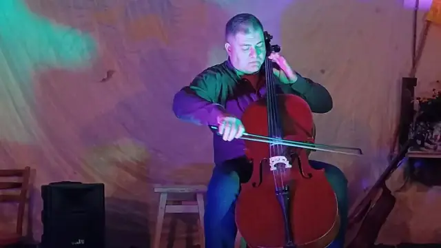

“Creative Assortment” evening


“Creative Assortment” was a format we wanted to come back to again and again. It was good to see all those smiles and to hear the kind words afterwards.
- Format
- evening of music, improv and humour
- On stage
- Ivan Tereshko, Dmytro Holovko, Pavlo Osikov, Hennadii Hrebeniuk
- Raised for the army
- UAH 2,490
- Venue
- bomb shelter in the Pokrovskyi district of Kryvyi Rih
- Entry
- free, donations collected
What was in the assortment
Ivan Tereshko opened and put everyone in a cheerful mood. Dmytro Holovko’s cello went straight for the heartstrings, and Pavlo Osikov’s improv kept setting off bursts of applause.
And we can’t leave out “The She-Baboon” by Hennadii Hrebeniuk, which tore the whole room to pieces.
It got hot in there! Partly that was our actors and musicians, and partly it was Svitlana Ostapchuk’s anti-Covid tea.
A new donation record
We raised UAH 2,490 for the army that night. At the time it was our new record!